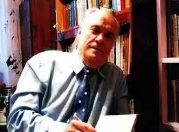
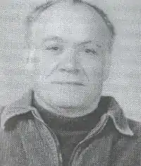

Олександр Антонович Рябошапка (27 жовтня 1945, с. Диківка, Знам'янський район, Кіровоградська область – 6 жовтня 2018, м. Знам'янка, Кіровоградська область) – український журналіст, краєзнавець, письменник, член Національної спілки журналістів України.
Рябошапка Олександр Антонович народився 27 жовтня 1945 року в селі Диківка Знам'янського району Кіровоградської області. Його мати – Любов Григорівна – ланкова буряківничої ланки Диківського колгоспу; батько Антон Григорович – колгоспний механізатор. Сім'я була багатодітна: донька і п'ятеро синів.
Закінчивши Диківську семирічну школу, Олександр за сімейними обставинами вирішив піти працювати в поле разом з батьком і братом Віктором. Працював на тракторі, потім – на комбайні. В цей же час продовжував своє навчання у вечірній школі сільської молоді, де закінчив 9 класів, а 10-11класи закінчив вже у денній школі рідного села. Ще школярем захоплювався літературою, писав до районної газети, користувався авторитетом серед молоді, мав організаторські здібності. Це дало йому змогу очолити комітет комсомолу колгоспу та стати завідуючим сільським клубом. Паралельно з роботою навчався в Олександрійському училищі культури, деякий час працював в редакції Знам'янської міськрайонної газети "Серп і молот". Згодом вступив на філологічний факультет Кіровоградського педагогічного інституту імені О. С. Пушкіна. Одружився з коханою дівчиною Марією, в родині зростало двоє дітей. Свою журналістську діяльність продовжив на посаді заступника редактора Добровеличківської районної газети "Сільське життя". Все ладилося, були великі плани на майбутнє, але страшна автомобільна аварія у 1976 році завадила цим планам здійснитися. Внаслідок дорожньо-транспортної пригоди 30-річний Олександр Рябошапка став інвалідом першої групи, прикутим до інвалідного візка. Мало хто вірив, що Олександр Антонович зуміє прожити понад три десятка років повноцінного життя. Весь цей час з ним була поряд його дружина Марія Іванівна, яка стала для нього мадонною, берегинею на все життя. Родина була для нього тим єдиним джерелом, з якого він черпав свої сили для творчості. Та тяжка фізична трагедія не зломила його духу. Свої зусилля він вирішив зосередити на послідовній пошуково-краєзнавчій роботі. Вивчав сторінки старовини Чорнолісся, життєвий шлях визначних людей Знам'янщини (науковців, дипломатів, знаних медиків, діячів культури, військових). Його перша книга "Такі незвичайні долі", яку він присвятив дружині Марії, вийшла восени 1991 року у Дніпропетровську (видавництво "Січ"). Там же вийшла і друга – "Чорнолісся пам'ятає" – до 50-річчя визволення Знам'янщини від німецько-фашистських загарбників. Готуючи до видання свої книжки, прискіпливий пошуковець вперше повідав людям імена десятків воїнів-визволителів, розшукав їхніх рідних, однополчан, зниклих безвісти тощо. І завдячуючи йому, багато сімей дізналися про місцезнаходження могил своїх близьких, щоб вклонитися їхній пам'яті. Стала цікавою і третя книжка – "Вічне джерело", яка вийшла у Кіровограді ("Центрально–Українське видавництво"). Книга про сторінки життя класика української музики Миколу Лисенка та про Андрія Лисенка – головного лікаря залізничної лікарні (1874–1905 рр.) – рідного брата композитора. Микола Лисенко разом із своїм троюрідним братом, драматургом Михайлом Старицьким відвідували Знам'янку, мешкали в сусідньому селі Орлова Балка. В книзі можна знайти рядки про народну поетесу М. С. Бондаренко, відомого художника І. П. Похитонова, про автора відомої пісні "Їхав козак за Дунай" С. Климовського, який тривалий період проживав на невеличкому хуторі Припутні біля с. Мошорине Знам'янського району. Згодом побачили світ нові книги О. Рябошапки – "Дорогі мої земляки", "Вогонь нескорених сердець", "Знам'янка: залізниця, історія, люди". Цей доробок Олександра Антоновича у 1998 році відзначений премією імені В. Ястребова. Пізніше була видана книжка "Пам'ять крізь роки". До 60-річчя Перемоги член Національної спілки журналістів України, краєзнавець і публіцист О. Рябошапка за фінансової підтримки спонсорів випустив у світ чергову книгу – "За Перемогу і Правду". За багаторічну працю, за вагомий внесок у створення Книги Пам'яті та Книги скорботи Олександр Антонович нагороджений медаллю "За трудову відзнаку" та Почесним нагрудним знаком "За сумлінну працю" Міністерства праці і соціальної політики України, пам'ятними іменними медалями Українського Товариства охорони пам'яток історії і культури Української РСР. Йому присвоєно звання Почесного громадянина рідного села Диківка, а з 2002 року він – Почесний громадянин м. Знам'янка. В Олександра Рябошапки було ще багато задумів, планів краєзнавчих розвідок про історичну давнину рідного краю, але їм не судилося здійснитись. 6 жовтня 2018 року перестало битися серце палкого патріота і краєзнавця Олександра Антоновича Рябошапки.